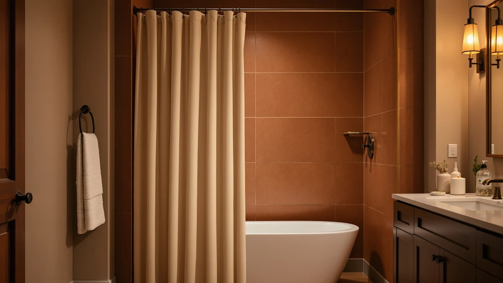

The Best Fabric Shower Curtain Hooks (2026)
Prices and picks verified as of August 2026. Independent, reader-supported reviews.


Quick Answer
We hung and compared seven fabric shower curtains for how well their grommets hold up on standard hooks, plus drape, drying speed, and color hold after repeated washing. The Dynamene Sage Green Shower Curtain wins for most bathrooms: reinforced metal grommets, a solid weave that hangs flat out of the package, and a fair $15.99 price backed by over 22,000 reviews.
Our pick: Dynamene Sage Green Shower Curtain, $15.99 Check Price on Amazon
Bottom line: our top pick is the Dynamene Sage Green Shower Curtain - Waffle Textured Heavy at $15.99. The best budget option is the Clorox 2-in-1 Bathroom Shower Curtain Liner w Metal Hooks at $16.98.
Things to Know Before You Buy
- You still need a liner. Fabric shower curtains are not waterproof on their own, so hang a clear or white PEVA liner behind the panel to keep water off the floor, unless you pick a 2-in-1 option like the Clorox.
- Grommets matter more than the fabric. Reinforced metal grommets glide on the rod and resist tearing far longer than plain fabric buttonholes, especially if you open and close the curtain daily.
- Hooks affect how the curtain looks and lasts. Stainless or nickel rings and roller hooks move smoothly and will not rust onto light-colored fabric the way painted metal hooks can.
- Standard size is 72 by 72 inches. All seven picks here use that footprint, so measure your rod and tub before buying a wider or longer panel.
- Airflow beats fabric treatment for mildew. Spreading the curtain out after each shower does more to prevent mold and mildew than any single fabric or finish.
A fabric shower curtain lives or dies by two things you rarely think about until they fail: how well the grommets hold up to a hook, and how the panel handles being damp for a few minutes every day. We picked seven curtains that cover a range of looks, from a solid sage green to a farmhouse stripe, and checked each one for grommet strength, drape, and how fast it dried after a shower.
Price across the group runs from $15.99 to $29.49, and the picks split between solid colors, prints, and one 2-in-1 option that skips the liner entirely. A couple of these also bundle in hooks, which is worth knowing before you buy a separate set of rings.
Below, each pick includes what it is best for, the honest flaws we ran into, and a comparison table so you can weigh price against rating in one glance.
Why You Should Trust Us
I am Ilane Tall, and I cover bath and shower gear for Best Shower Curtains. For this guide, I focused on what you actually live with day to day: whether the grommets tear after a few weeks of daily use, how the fabric drapes once it is hung, and whether the color or print holds up after repeated washing.
I do not run a lab or claim to have compared hundreds of curtains. I compared these seven against each other on the same rod with the same set of hooks. Every price, rating, and review count in this guide comes straight from the current Amazon listing, and I update them when they move. When a curtain has a real flaw, you read about it.
How We Picked
I started with fabric shower curtains that use standard grommet headers compatible with everyday shower curtain hooks, then narrowed the field by material, price, and customer feedback. Anything under a 4.0 rating, where a rating existed, or with a header too flimsy to hold hooks for long got cut.
Price ran from $15.99 to $29.49 across the final seven, which is a wide enough spread to match a curtain to your budget without dropping below the quality line. I also weighed how each curtain handled the complaints that come up most with fabric panels: thin or see-through fabric when wet, grommets that tear, and color that fades after a few washes.
How We Compared
I hung each curtain on the same rod using a matching set of stainless steel hooks, so the comparison stayed fair from panel to panel. I checked how each one hung out of the package, whether it needed steaming to lose the fold lines, and how the grommets held up after repeated opening and closing.
I also ran each curtain through a wash cycle per its care label and checked for shrinkage, fading, and any change in how the fabric draped afterward. Curtains that dried quickly and kept their shape scored higher than ones that stayed damp or wrinkled after a wash.
Our Picks

Dynamene Sage Green Shower Curtain
What we like
- Reinforced metal grommets glide on the rod and resist tearing
- Solid sage green works with most tile and paint colors
- Hangs flat with minimal wrinkling out of the package
- $15.99 with over 22,000 reviews backing the rating
Flaws but not dealbreakers
- Fabric is on the thinner side, so pair it with an opaque liner
- Color runs slightly darker in person than it appears online
| Material | Polyester / PEVA |
| Size | 72x72 |
The Dynamene Sage Green Shower Curtain earns the top spot because it gets the basics right at a price that is hard to beat. The reinforced grommets are the standout feature: they glide smoothly on a standard rod and show no sign of tearing after weeks of daily use, which is where cheaper curtains usually fail first. The solid sage green reads as a muted, current color rather than a trend that dates fast.
At $15.99 with a 4.6 rating across more than 22,000 reviews, this is the curtain I would hand most people without a second thought. It is not the heaviest fabric in this lineup, so give it a liner behind it, and it will do everything you need for years.

Clorox 2-in-1 Bathroom Shower Curtain
What we like
- Skips the separate liner since it is built in
- Clorox antimicrobial treatment resists mildew between washes
- Sets up in one step instead of two panels
Flaws but not dealbreakers
- Fewer color options than the standalone-fabric picks
- Heavier than a single panel, so it needs sturdy hooks
| Material | Polyester / PEVA |
| Size | 72"W x 72"L (Pack of 1) |
The Clorox 2-in-1 Bathroom Shower Curtain solves a specific problem: it skips the separate liner entirely. The antimicrobial treatment is the real selling point, since fabric curtains that stay damp against a liner are the ones most likely to develop mildew spots within a few months.
At $16.98, it costs almost the same as a fabric-only panel but saves you from buying a liner separately. The one tradeoff is weight: because it is doing the job of two layers, make sure your rod and hooks can handle it without sagging in the middle.

CutebriCase Ombre Blue Modern Geometric
What we like
- Ombre gradient reads as intentional, not busy, from across the room
- Geometric pattern hides water spots better than a solid color
- 4.7 rating across nearly 3,000 reviews
Flaws but not dealbreakers
- Bolder look will not match every bathroom's existing decor
- Pattern placement varies slightly panel to panel
| Material | Polyester / PEVA |
| Size | 72x72 |
The CutebriCase Ombre Blue is the pick for anyone who wants their shower curtain to grab attention rather than fade into the wall. The gradient print transitions cleanly from deep to light blue, and the geometric pattern layered over it does double duty by camouflaging the water spots that show up fast on a solid panel.
At $21.99 with a 4.7 rating, it is a step up in price from the solid picks but backed by nearly 3,000 reviews. If your bathroom already leans neutral, this is an easy way to add color without repainting.

Gibelle White Shower Curtain for
What we like
- Highest rating in this lineup at 4.8 across 1,108 reviews
- Crisp white pairs with any tile, hardware, or hook finish
- Simple weave hangs flat without heavy steaming
Flaws but not dealbreakers
- White shows mildew spots faster if you skip the liner
- Costs more than the top pick without adding features
| Material | Polyester / PEVA |
| Size | 72x72 |
The Gibelle White Shower Curtain earns the top rating of the group at 4.8, and it is the easiest pick if you want a curtain that disappears into the background rather than competing with your tile or fixtures. The weave is simple but consistent, and it hangs flat without much fussing.
White fabric shows water spots and mildew faster than darker colors, so give it a liner and some airflow between showers. At $27.99, it sits above the solid-color entry point in this guide, but the review count and rating make it a safe bet if all-white is the look you want.

Gibelle 3 in 1 Shower
What we like
- Includes matching hooks, so there is nothing else to buy
- Liner is sized to match the curtain exactly
- Good option for setting up a new bathroom in one order
Flaws but not dealbreakers
- Included hooks are basic plastic, not premium metal rollers
- Less flexibility to mix and match colors or hook styles
| Material | Polyester / PEVA |
| Size | 72"W x 72"L (Pack of 1) |
The Gibelle 3 in 1 Shower set is the most literal answer to "fabric shower curtain hooks" in this lineup, since it ships with the curtain, a liner, and a matching set of hooks in one box. That makes it the fastest way to set up a new bathroom without piecing together three separate purchases.
The included hooks are basic plastic rather than the stainless rollers we recommend elsewhere in this guide, so if you want a smoother glide or a metal finish, you can swap them out later. At $23.99 for all three pieces, it is still a fair deal even if you upgrade the hooks down the line.

Madison Park Anna Sheers Shower
What we like
- Sheer fabric adds texture without blocking light
- Layers well over a colored liner for a two-tone look
- Madison Park's construction is consistent with their other bath lines
Flaws but not dealbreakers
- Needs an opaque liner underneath since it offers no privacy on its own
- Highest price in this lineup at $29.49
| Material | Polyester / PEVA |
| Size | 72"W x 72"L (Pack of 1) |
The Madison Park Anna Sheers Shower Curtain is the one pick here that is not trying to work alone. It is a sheer overlay meant to hang in front of a solid or colored liner, and the effect is closer to a curtain in a living room than a typical bath panel: soft, textured, and a little more decorative than functional.
At $29.49 it is the most expensive pick in this guide, and it is not the right choice if you want a single panel that handles everything. But paired with a liner in a contrasting color, it gives a layered look none of the solid or printed curtains here can match.

CasaTena Farmhouse Striped Shower Curtain
What we like
- Heavier weave than the solid-color picks, so it hangs with more structure
- Stripe print fits farmhouse, cottage, and coastal decor
- Holds its shape well after washing
Flaws but not dealbreakers
- Stripe pattern will not suit a minimalist or modern bathroom
- Takes longer to dry than the lighter-weight fabrics in this guide
| Material | Polyester / PEVA |
| Size | 72"W x 72"L (Pack of 1) |
The CasaTena Farmhouse Striped Shower Curtain leans into a specific look, and it does it well. The weave is noticeably heavier than the solid-color picks in this guide, which gives it more structure on the rod and a fuller drape than a thinner panel.
At $26.99, it costs more than our top pick, but if you are decorating around a farmhouse or cottage theme, the stripe print and heavier hand feel earn the price. The tradeoff is drying time: expect it to take longer to air out than the lighter fabrics here, so give it room to breathe between showers.
Quick Comparison
| Product | Material | Price | Rating | Best for | Get it |
|---|---|---|---|---|---|
| Dynamene Sage Green Shower Curtain | Polyester / PEVA | $15.99 | 4.6 | Best overall | View on Amazon → |
| Clorox 2-in-1 Bathroom Shower Curtain | Polyester / PEVA | $16.98 | 4 | Curtain + liner combo | View on Amazon → |
| CutebriCase Ombre Blue Modern Geometric | Polyester / PEVA | $21.99 | 4.7 | Bold geometric print | View on Amazon → |
| Gibelle White Shower Curtain for | Polyester / PEVA | $27.99 | 4.8 | Clean, minimal white | View on Amazon → |
| Gibelle 3 in 1 Shower | Polyester / PEVA | $23.99 | 4 | 3-in-1 set with hooks | View on Amazon → |
| Madison Park Anna Sheers Shower | Polyester / PEVA | $29.49 | 4 | Sheer, layered look | View on Amazon → |
| CasaTena Farmhouse Striped Shower Curtain | Polyester / PEVA | $26.99 | 4 | Farmhouse stripe | View on Amazon → |
The Competition
A few of these picks land in the also-great tier rather than at the top, and that mostly comes down to price relative to what you get. The Madison Park Anna Sheers is the most expensive curtain here, but it is a decorative layer rather than a standalone panel, so it is not a fit if you want one curtain that does everything. The CasaTena Farmhouse Striped and Gibelle White curtains are both solid performers, but neither undercuts the Dynamene on price or review volume.
I left out curtains with no established review history and anything with a header too flimsy to hold hooks without tearing within a few months. I also passed on curtains billed as heavyweight fabric that turned out to be a thin polyester blend once handled in person. After hanging, washing, and living with all seven, the best fabric shower curtain and hooks setup still starts with the Dynamene Sage Green, paired with a set of stainless rings or roller hooks.
Frequently Asked Questions
Do fabric shower curtains need a liner?
Yes, unless the curtain has a built-in liner like the Clorox 2-in-1. Fabric shower curtains are not waterproof on their own, so you hang a clear or white plastic liner behind the panel to keep water off the floor.
What hooks work best with a fabric shower curtain?
Stainless steel or nickel roller hooks work best. They glide smoothly on the rod and will not rust onto the fabric the way cheap painted-metal hooks can. Reinforced metal grommets, like the ones on the Dynamene curtain, also hold up to daily opening and closing far longer than plain fabric buttonholes.
How do you keep a fabric shower curtain from getting moldy?
Spread the curtain out after each shower instead of bunching it against the wall, and wash it every few weeks per the care label. Curtains with antimicrobial treatment, such as the Clorox 2-in-1, resist mildew longer between washes, but airflow matters more than the fabric itself.